Videos from quad, hexcopters and helmets
2013
I have posted videos filmed from the YF680 hexcopter and TBS Discovery Pro using a GoPro. Enjoy...
SeanMac.Net - videos and photos served locally:
YouTube - Choose HD option from Settings Menu - Select 720p or 1080p:
Happy New Year - 2013!
Tuesday, January 1st, 2013
Happy New Year to all from Penny and Sean McHugh!
Hoping all had a safe and enjoyable (think relaxing) Christmas and New Year.
Quad Copter Build
Friday, January 18th, 2013
I did a build of a Multiwiicoper - Scarab QUAD X Stealth - Carbon Armour v2.2 - Electronica - Quadcopter: http://multiwiicopter.com
The assembly was pretty straight forward with only some differences between the instructions and the supplied components. As you can see, I also made up a protective box for the quad to sit in during transport.
I have two boxes: one for the transmitter and the other for the quad. The maiden test flight went well and I hope to set it up with a Countour HD camera and use it for filming mountain bike events and other things.
This is a countinuing project and I will keep posting updates as things progress.
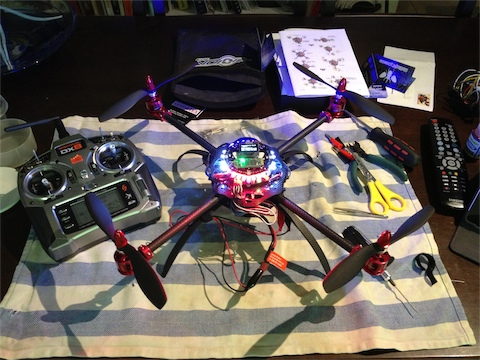
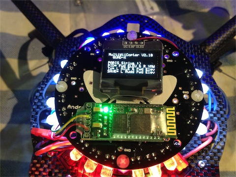
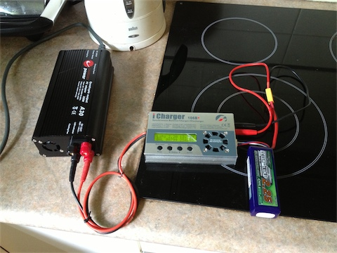
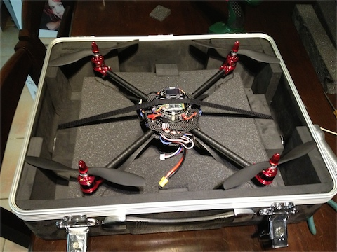 Update: I velco'd the Countour HD camera to the bottom of the quad, next to the battery for a test and the results were ok. I need to get the "recon" additional components to make the best use of the camera.
Video:
More than one Sean
Tuesday, January 22nd, 2013
This is a sign at the round-a-bout near Bunnings advertising the new ConocoPhillips project in Darwin. I was supprised to see another Sean mentioned...
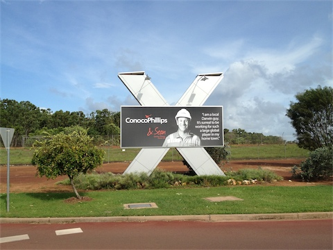
Heavy Rain on Gold Course
Tuesday, February 11th, 2013
Heavy rain finally and the Darwin Golf Clud 10th fairway got flooded as normally happens when the grounds keepers dont keep an eye on the small drain under the bridge. At least we are getting some sort of Wet Season after all.
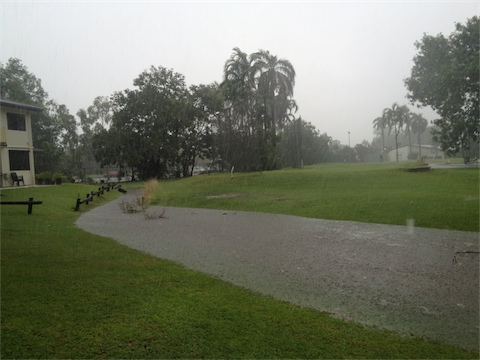
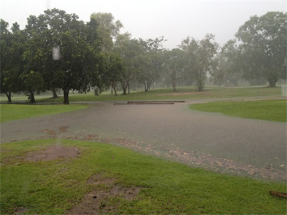
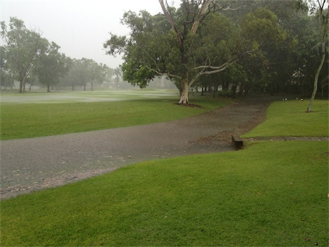
Big Hexacopter Build
Friday, February 15th, 2013
The Tarot YF680 Hexacopter frame arrived today and got it built in 3 hours. There were some interesting disassembly bits I had to do in order to fit the landing gear, but in all the frame is solid and will make a good photo/video platform. The only leftovers I had were one screw and some spare clips and boom pivots.
The Prop/Motor/ESC's should be here this week. I have done all the other setup on the spare Paris Sirius MultiWii IMU and calibrated it to the Spektrum receiver with all end points and servo reversing needed. Once the rest arrives, I will be soldering and positioning everything on the fravme.
This is the box as it was delivered
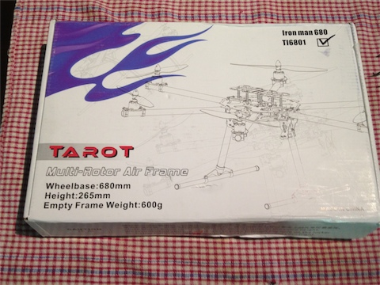
The contents are compact, no hint ay how big this will be
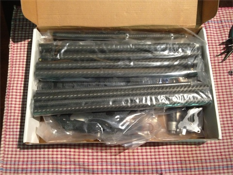
Completed Hex with booms locked in flight position
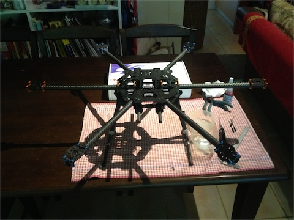
Completed Hex with booms locked in transport position
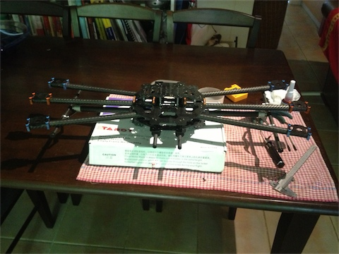
Big Hexacopter Build - Test Flight
Monday, February 25th, 2013
The Tarot YF680 Hexacopter has been assembled and is ready for first flight. I am cautious with all maiden flights as you never know what the flight computer (IMU) will think is level, so this may lead to the model tipping over. I put the Hex on the ground and held the centre of the frame to keep it under control and then gave it some throttle. The hex lifted off at a small angle which I attribute to the crap landing gear (this will have to be fixed replaced soon).
I then held the hex off the ground and gave it 25% throttle to see its hovering characteristics. This seemed fine, until the hex wanted to fall off to the right. I tried a few times with this method and finaly was happy with the stability. Now for the real flight!
I put the hex in the middle of the 10th fairway so there was no obsticles around and throttled up. I need to change the start program of the ESC's to be "soft" rather than normal as the motors power up too quickly for s smooth takeoff. After a few minutes of hovering and landing tests I packed it in and was pleased that everything went well. I don't like the landing gear as it is sloppy and too small. With a wheelbase of 680mm across and the landing gear of only a quater of that, you have to be precise or the hex could topple over.
The power distribution block with ESC's connected
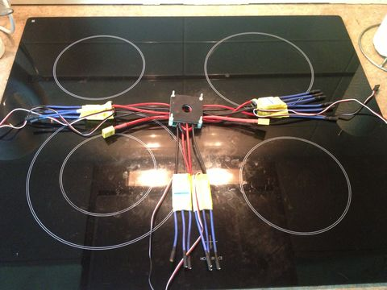
The assembled unit ready for test flight
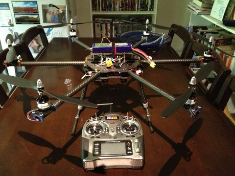
Data Teaching Kitty
Friday, March 15th, 2013
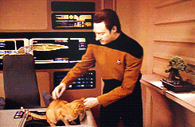
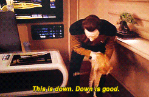
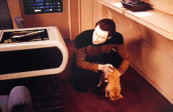
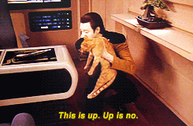
Big Hexacopter Rebuild
Sunday, March 24th, 2013
I pulled the hex apart and redid all the wiring with a new power distribution board I bought from multiwiicopter.com. I thread-locked every hex screw on the bottom and top frame plates to make sure everything stays strong and solid.
I completed the assembly of the hex within 4 hours, but there was some backtracking as getting the esc positioning correct in a folding hex design is a bit of a headache. You have to make sure that no wires are getting caught/strained in retracted and deployed boom positions.
This is the new power distribution board
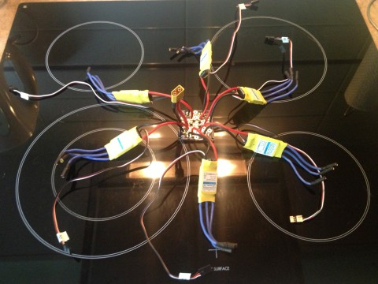
two esc's fit in between the top and bottom frame plates, with the other four under the bottom frame plate
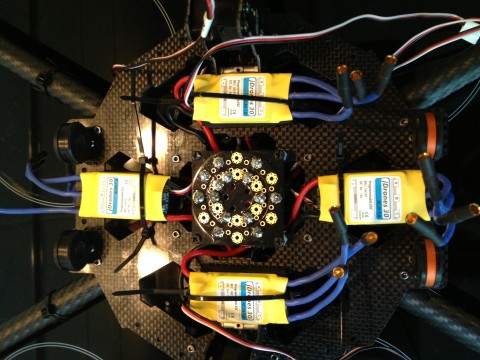
Looking into the heart of the beast. All motor wires (just) fit neatly.
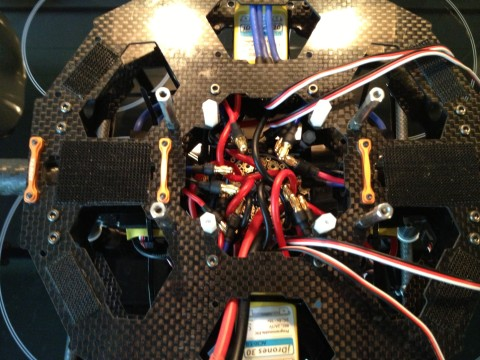
The motors have to turn in different directions for each boom
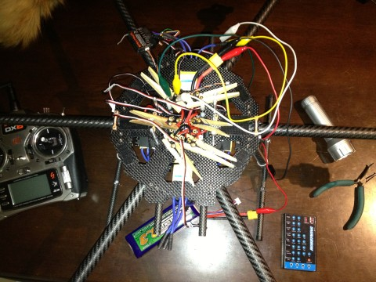
Ghost Rider - Fail
Wednesday, March 27th, 2013
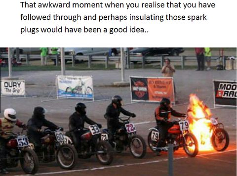
Big Hexacopter Dual Batteries
Sunday, April 14th, 2013
Setup dual batteries for longer flight time on the YF680 hex.
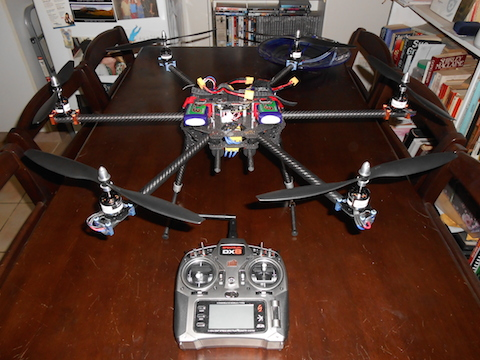
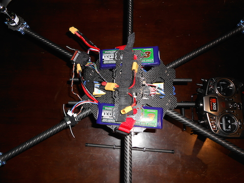
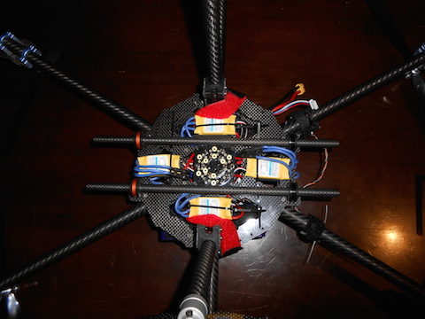
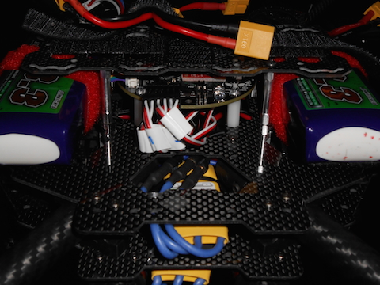
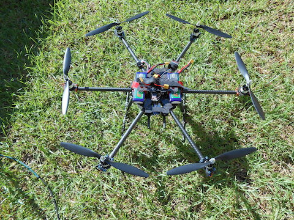
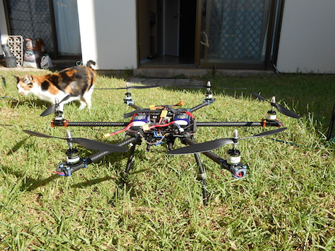
Big Hexacopter Zip Tie Vibration Mount for GoPro
Sunday, December 22nd, 2013
Setup a Zip-Tie vibration isolation mount and replaced the Sirius r4.6 flight controller with a Naza M Lite unit.
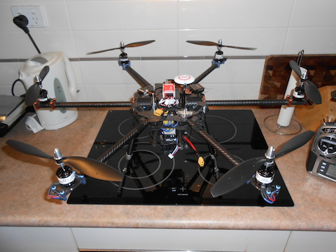
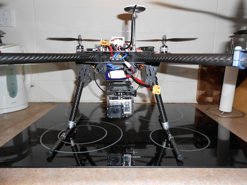
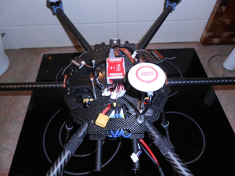
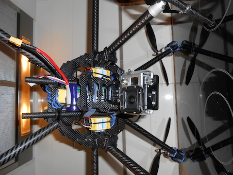
Go to Top of Page